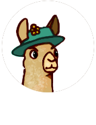

About PROJECT: Knittable
PROJECT: Knittable got its start as the capstone project for a coding bootcamp. The primary developers are:

Molly
The knitter on the team, Molly came up with the initial idea for PROJECT: Knittable. When she isn't coding or knitting, she enjoys riding her bike, playing with her dog, and cheering for the Sounders.

Philip
The powerhouse behind the look of PROJECT: Knittable! When he isn't in front of a computer, Philip...

Tosi
Formerly a Llama occultist whom was summoned via a trans-dimensional tesseract experiment gone awry. Instead of summoning a completed copy of their future project, Philip and Molly were granted Tosi the Llama occultist instead. Chiefly the driver and llama herder on PROJECT: Knittable, he navigates alongside his fearless companions to fashion a World where everything shall be mended and made 'Knittable'.
Future Features
- Men's sizes
- Fully-customizable design options
- Fully-sustomizable body measurements
- Non-stockinette panel additions
- Mobile support